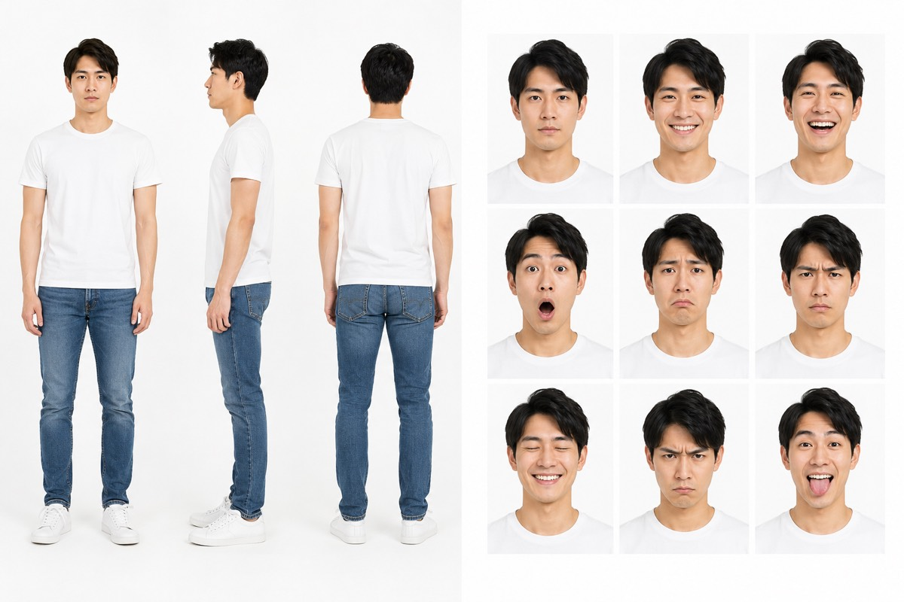

上課時最常被問到的一題是：AI 每次生的圖都長得不太一樣，怎麼辦？今天生出來的角色很滿意，隔天再生一張，帽子變形狀、毛色變深、體型變胖，看起來像另一隻。這件事有解法，而且不需要學繪圖軟體，流程只有三步：抽卡、定裝照、三視圖。
- 用 AI 生圖做品牌角色、吉祥物或 AI 助理形象，但每次生出來都不一致的人
- 想做社群圖卡、貼圖或官網插圖，需要同一個角色反覆出現的人
- 自己就是品牌主角，想讓 AI 生成的形象更像本人的講師、教練或創作者
- 抽卡、定裝照、三視圖三步驟的執行順序，以及各自要解決的問題
- 一份三視圖驗收清單，用來檢查角色本體、固定配件與畫風
- 定裝照與四視圖的提示詞，可以直接改成自己的角色
- 規格存好之後 AI 還是不照做時，由淺到深的三層做法
問題不在 AI 不聽話，在角色還沒有規格
AI 每次生成都是重新畫一次。你給的描述如果只有「一隻白貓，戴帽子」，那句話能對應的畫面有非常多種，每一次它都會挑一種給你。
所以角色不穩定的原因，通常是這個角色還沒有一份規格。沒有規格的時候，你每次都在重新發明它。
規格要包含哪些東西？至少是毛色與身形比例、主要配色、固定的配件與手持物、最有辨識度的神情與姿勢，以及整體要偏寫實或偏插畫。這五件事定下來，角色才算被固定住。
造型還沒決定時用，九宮格一次比九個版本，一次只改一個變因。
抽到滿意的立刻做，趁 AI 還記得偏好，把五件事一次固定住。
把單張形象展開成正面、側面、背面，左右不對稱就做成四視圖。
第一步：抽卡，用九宮格快速收斂
造型還沒決定的時候，先抽卡。
我做萊卡的時候就是這樣：一直在抽卡，換一隻帽子、換一隻，一直抽。一張一張抽很耗時間，可以直接請 AI 做成九宮格，一次看九個版本，快速選。
抽卡有一個關鍵：角色、背景與角度固定，一次只改一個變因。這一輪只比帽子，下一輪只比手持物。九張裡面只有一個地方不同，你才看得出來自己真正喜歡哪一個。變因一次改兩三個，你會選不出來，也不知道好看的是哪個元素。
第二步：定裝照，角色的第一份視覺規格
抽到滿意的那一張之後，重點來了：趁 AI 還記得你的喜好，馬上請它做定裝照。
這個時機很重要。同一個對話裡，AI 手上還有你剛剛選過的那些偏好，這時候接著要它整理成定裝照，命中率最高。等你關掉視窗隔天再開新對話，那些偏好都要重講一次。
萊卡的定裝照是修長白貓半側身回眸，戴紅色貝雷帽，手舉白色信封靠近臉部，信封以紅色圓形貼紙封口，畫面保留高冷眼神。這張圖負責固定五件事：
- 角色的毛色與身形比例。
- 主要配色。
- 固定帽款與手持物。
- 角色最有辨識度的神情與姿勢。
- 整體要偏寫實或偏插畫。
有了定裝照，後續就不必每一次都重新發明這個角色。它固定角色最常被看見的狀態，也讓你可以明確指出哪些元素必須保留、哪些部分可以調整。如果之後要做貼圖、網站插圖、社群圖卡或動作設計，定裝照就是共同參考。
把貓、帽子、手持物換成你自己的角色元素就可以用。句子結構維持一樣：主體與體型、固定配件、神情、畫風、背景。
第三步：三視圖，讓角色轉過身還是同一個
一張定裝照只能證明這個角度好看。角色轉到側面或背面之後，帽子怎麼戴、東西拿在哪一側、尾巴落在哪裡，都還沒有答案。這就是三視圖要接手的工作。
三視圖就是一個角色的三個角度：正面、側面、背面。我自己會用四視圖，因為左右兩側有時候長得不太一樣。萊卡手上的信件、帽子的方向與左右姿勢都可能產生差異，所以我把側面拆成左側與右側，做成前、左、後、右四個角度。
三視圖把角色從一張形象照，整理成可以被重複使用的設計規格。之後不管換場景、換動作，或交給不同的圖片生成工具，你都有共同的驗收基準。
配件也可以單獨做一張角度參考。咪卡的帽子就另外做了正面、左前四十五度、左側、右側、背面五個角度，之後不管畫哪個姿勢，帽子的形狀跟釦環位置都有得對。
萊卡的三次修正
這讓我發現「全身」這個詞仍然不夠精確，提示詞還要明寫「擬人化、可雙足站立、修長」。
修正成雙足站立，身形也變修長，但畫風過於寫實，和咪卡原本較可愛的插畫風格不一致。
把咪卡的角色設定圖放回畫風參考，同時要求萊卡保持修長，完成前、左、後、右四個角度。
三次才過關，這是正常的次數。三視圖的價值也在這裡：它讓每一次的差異都能被具體指出來，你才知道下一輪要修什麼。
三視圖的驗收清單
生成之後要逐項檢查，分成三組看。
四個角度都維持一樣的毛色。頭身比例與四肢長度一致。維持設定好的體型與站姿。臉型、眼神與尾巴不要在不同角度突然變成另一隻。
帽子的大小、傾斜方向與覆蓋位置一致。手持物在可見角度都有合理的握法，背面遮擋符合實際拿法。配色小元件在可見角度沒有消失或改色。
線條、陰影與材質維持同一套插畫語言。角色可以和既有角色有體型差異，但仍看得出來屬於同一個角色宇宙。背景保持簡單，方便比較角色本身。
如果品牌主角是真人
同一套邏輯也適用真人品牌，而且更簡單，因為你不用抽卡。
最直接的做法是拍四張照片：正面、左邊、右邊、背面。這四張就是你自己的四視圖。
表情也可以比照辦理。如果你覺得 AI 改出來的笑容不像自己，就拍自己真正笑起來的樣子餵給它，生成的結果會更準確。

把規格存起來，下次不用重講
定裝照與三視圖做完之後，記得把它們存進固定的地方，之後每次生圖都拿同一套來當參考。
顏色也建議一起鎖。不要跟 AI 說「我要藍色」，要說「我要這個色碼的藍」。色碼就是把每一種顏色都編好號，只要跟 AI 說我要的淺綠色是這一個編號，現在的 AI 基本上都會生成很接近的顏色。給法就是直接給 HEX 編號，例如藍 #C000C6、粉 #FFAAD5。
角色定裝照、三視圖、色碼、排版偏好，這幾樣加起來就是一份可以反覆使用的品牌規格。存好之後，下次生圖你只要說「照這套做」，不必再從頭描述一次。
順手把畫風與配色一起問出來
角色定下來之後，畫風與配色可以請 AI 陪你問一次，整理成同一份設定：
公司已經有官網的人最快：把官網丟給 AI，直接請它提煉企業色碼。之後所有圖卡都用色碼鎖住，風格就不會跑。
規格存好了，AI 還是不照做怎麼辦
這是課堂上第二常被問到的問題。規格明明存了，生出來還是不像。三層做法，由淺到深。
光在對話裡講「用咪卡的造型」，AI 常常不照做。最笨也最穩的一招，就是生圖的時候直接再把參考圖丟一張過去，這個格式最不會翻車。
專案就是一個資料夾，免費版就能開。把圖卡規則、常寫的文章、做好的角色圖都丟進去當資料來源。在同一個專案裡聊圖文，AI 會同時參考資料跟你們之前講過的話，越聊越懂你的風格。
提示詞就像我口頭跟師傅講一句「這面牆幫我漆白」，他愛聽不聽、看心情。技能包是把整份合約寫清楚：漆成白色、色碼是哪一個、要漆三遍、用哪個牌子的乳膠漆、漆完幫我通風。白紙黑字簽下去，AI 就會比較認真照著做。
三步驟總結
造型未定時用九宮格一次比九個版本，角色、背景、角度固定，一次只改一個變因。
抽到滿意的立刻做，趁 AI 還記得偏好，固定毛色體型、配色、配件、神情與畫風。
把單張形象展開成正面、側面、背面，左右不對稱就做成四視圖，再用三組清單逐項驗收。
角色不穩定，通常不是 AI 的問題，是角色還沒有規格。這三步的目的就是把規格生出來，讓你之後每一次生圖都有東西可以對照。